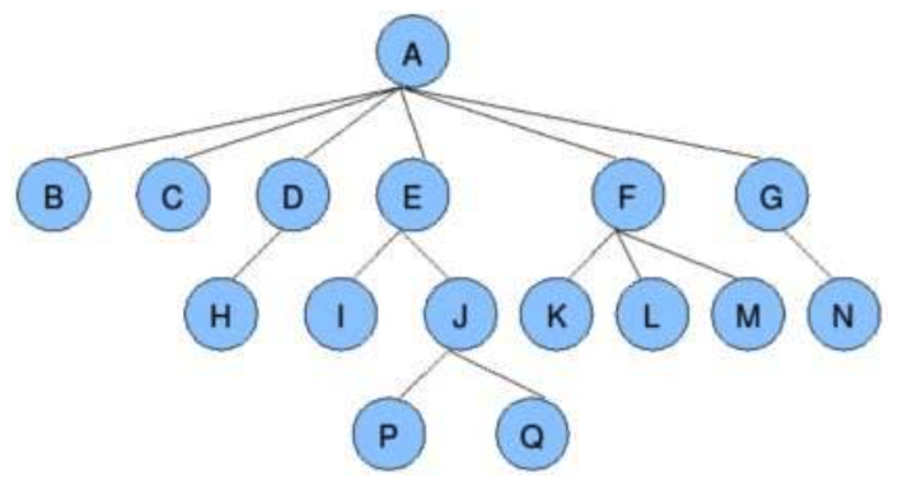
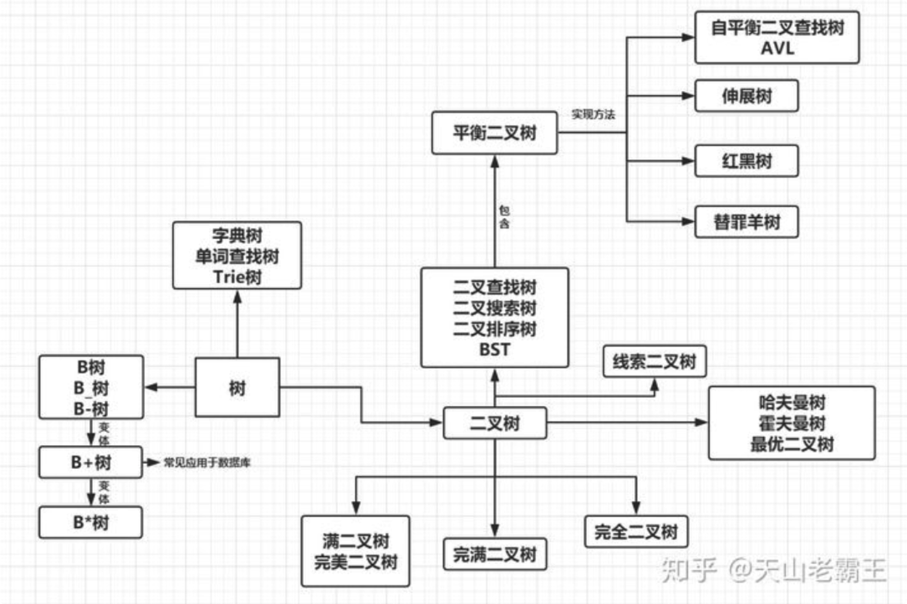
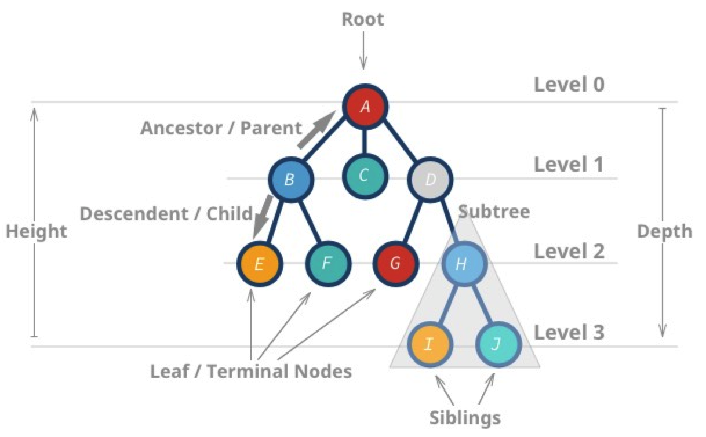

字典树数据结构技术原理与开发实践

目录
协作式系统中对于支持”动态文档结构、嵌套式文档结构“等较为复杂的文档类型，需要引入树形数据结构，本文首先总结了”树形“数据结构的基本情况，然后针对”协作式系统“相关需求分析，着重对”字典树“数据结构的技术原理进行讲解，并给出相应的开发实践方法。

树
体系图
树型数据结构的体系

各类树型数据结构总结
| 名称 | 简称 | 要点 | 应用场景 |
|---|---|---|---|
| 无序树 | 树的任意节点的子节点没有顺序关系。 | ||
| 有序树 | 树的任意节点的子节点有顺序关系 | ||
| 二叉树 | 树的任意节点至多包含两棵子树 | 从二叉树的根结点出发，按照某种次序依次访问二叉树中的所有结点，使得每个结点被访问一次，且仅被访问一次。 | |
| 满二叉树 | 叶子节点都在同一层并且除叶子节点外的所有节点都有两个子节点 | ||
| 完全二叉树 | 对于一颗二叉树，假设其深度为d（d>1）。除第d层外的所有节点构成满二叉树，且第d层所有节点从左向右连续地紧密排列 | ||
| 完满二叉树 | 除了叶子结点之外的每一个结点都有两个孩子结点 | ||
| 霍夫曼树 | 带权路径最短的二叉树称为哈夫曼树或最优二叉树 | ||
| 二叉查找树 | BST | 若任意节点的左子树不空，则左子树上所有节点的值均小于它的根节点的值；若任意节点的右子树不空，则右子树上所有节点的值均大于它的根节点的值；任意节点的左、右子树也分别为二叉查找树；没有键值相等的节点 | |
| 线索二叉树 | 在二叉树的结点上加上线索的二叉树称为线索二叉树，对二叉树以某种遍历方式（如先序、中序、后序或层次等）进行遍历，使其变为线索二叉树的过程称为对二叉树进行线索化 | ||
| 平衡二叉树 | 它是一棵空树或它的左右两个子树的高度差的绝对值不超过1，并且左右两个子树都是一棵平衡二叉树，同时，平衡二叉树必定是二叉搜索树。 | ||
| 高度平衡树 | AVL | 它的特点是：1.本身首先是一棵二叉搜索树。2.带有平衡条件：每个结点的左右子树的高度之差的绝对值（平衡因子）最多为1。 | 适合用于插入删除次数比较少，但查找多的情况，例如内存地址空间管理 |
| 红黑树 | RBT | 每个节点都带有颜色属性的二叉查找树，颜色或红色或黑色。性质1. 节点是红色或黑色。性质2. 根节点是黑色。性质3. 每个红色节点的两个子节点都是黑色。(从每个叶子到根的所有路径上不能有两个连续的红色节点)性质4. 从任一节点到其每个叶子的所有路径都包含相同数目的黑色节点。 | 用于搜索,插入,删除操作多的情况下，例如进程管理 |
| 伸展树 | ST | 伸展树是一种自调整形式的二叉查找树，它会沿着从某个节点到树根之间的路径，通过一系列的旋转把这个节点搬移到树根去 | 不需要记录用于平衡树的冗余信息 |
| 替罪羊树 | 一种基于部分重建的自平衡二叉搜索树 | ||
| 多路搜索树 | BT | 一棵m阶B树(balanced tree of order m)是一棵平衡的m路搜索树。它或者是空树，或者是满足下列性质的树：1、根结点至少有两个子女；2、每个非根节点所包含的关键字个数 j 满足：┌m/2┐ - 1 <= j <= m - 1；3、除根结点以外的所有结点（不包括叶子结点）的度数正好是关键字总数加1，故内部子树个数 k 满足：┌m/2┐ <= k <= m ；4、所有的叶子结点都位于同一层。 | 为大块数据的读写操作做了优化,同时它也可以用来描述外部存储(支持对保存在磁盘或者网络上的符号表进行外部查找) |
| B+树 | B+树是B树的一种变形形式，B+树上的叶子结点存储关键字以及相应记录的地址，叶子结点以上各层作为索引使用。 | 广泛用于文件系统及数据库中 | |
| B*树 | 在B+树的非根和非叶子结点再增加指向兄弟的指针 | ||
| 字典树 | TT | 又称单词查找树，Trie树，是一种树形结构，是一种哈希树的变种 | 典型应用是用于统计，排序和保存大量的字符串（但不仅限于字符串） |
基本概念

| 术语 | 说明 | 备注 |
|---|---|---|
| 树 | 是以边(edge)相连的结点(node)的集合，每个结点存储对应的值(value/data)，当存在子结点时与之相连 | |
| 根结点 | 树的首个结点 | |
| 父节点 | 若一个节点含有子节点，则这个节点称为其子节点的父节点 | |
| 子节点 | 一个节点含有的子树的根节点称为该节点的子节点 | |
| 兄弟节点 | 拥有共同父节点的节点互称为兄弟节点 | |
| 祖先 | 对任意节点x，从根节点到节点x的所有节点都是x的祖先 | 节点x也是自己的祖先 |
| 后代 | 对任意节点x，从节点x到叶子节点的所有节点都是x的后代 | 节点x也是自己的后代 |
| 结点深度 | 对任意节点x，x节点的深度表示为根节点到x节点的路径长度 | 根节点深度为0，第二层节点深度为1，以此类推 |
| 结点的度 | 节点的子树数目就是节点的度 | |
| 叶子节点 | 度为零的节点就是叶子节点 | |
| 树的深度 | 一棵树中节点的最大深度就是树的深度，也称为高度 | |
| 节点高度 | 对任意节点x，叶子节点到x节点的路径长度就是节点x的高度 | |
| 森林 | m颗互不相交的树构成的集合就是森林 |
树的遍历
| 遍历方法 | 简称 | 要点 | 备注 |
|---|---|---|---|
| 深度优先遍历 | DFS | 沿特定路径遍历到叶子结点再回溯 (backtracking) 进入临近路径继续遍历 | 在输出遍历结果时，据父结点值相对子结点输出顺序的不同，深度优先遍历又可细分为先序、中序和后序遍历三种情况 |
| 先序遍历 | 直接按照我们对结点的访问顺序输出遍历结果即实现，父结点值被最先输出 | ||
| 中序遍历 | 左孩子值最先输出，然后是父结点，最后是右孩子 | ||
| 后序遍历 | 左右孩子值依次输出，最后是父结点 | ||
| 广度优先搜索 | BFS | 按照结点深度逐层遍历树结构 |
为什么这么多二叉树？
核心是为了避免树型结构退化成线性结构
字典树
定义
又称单词查找树，Trie树，前缀树(prefix tree)，一种树形结构，是一种哈希树的变种。典型应用是用于统计，排序和保存大量的字符串（但不仅限于字符串），所以经常被搜索引擎系统用于文本词频统计。它的优点是：利用字符串的公共前缀来减少查询时间，最大限度地减少无谓的字符串比较，查询效率比哈希树高。这种数据结构进阶路线为: 字典树-> 后缀树->patricia tree-> crit-bit tree。
字典查找树，顾名思义，就是在查询目标时，像字典一样按照一定排列顺序标准和步骤访问树的节点，举一个简单例子，英文字典查单词"He"，那么第一步你肯定要按照a-z的顺序先找到h这个首字母，然后再按照相同顺序找到e。
性质
有3个基本性质：
- 根节点不包含字符，除根节点外每一个节点都只包含一个字符；
- 从根节点到某一节点，路径上经过的字符连接起来，为该节点对应的字符串；
- 每个节点的所有子节点包含的字符都不相同。
基本操作
字典树的构造其实较为简单，和一般树的构造没有太大区别。
插入（以插入hell为例）
- 先检查根节点的子节点中是否存在’h',没有则插入一个保存’h’的节点，有则继续访问到’h’节点
- 继续到’h’节点，检查’h’节点是否是否存在’e',没有则插入一个保存’e’的节点，以此类推
- 直到需要插入的字符串中所有的字符都插入完，再最后一个节点处标记上单词标记，表示从根节点到达该点即为一个单词
查询（查询"hell"为例）
- 从根节点查询根节点的子节点找寻到’h'
- 从’h’的子节点中查询到’e'
- 从’e’的子节点中查询到’l'
- 从’l’的子节点中查询到’l'，该节点有单词标记位，字符串匹配成功，返回
删除，分为几种情况：删除的单词处于前缀，删除整个单词，删除分支上的单词，删除的单词包含了其他单词。总的标准是：
- 如果单词最后字符是非叶子节点的单词，只清除单词标志位
- 如果单词单独一枝，与其他单词都独立，那么整枝删除
- 如果单词删除过程中遇到非叶子结点，那么删除操作结束（不能删除）
- 如果单词删除过程中遇到其他单词的单词标志位，删除操作结束（不能删除）
评价
字典树的构建，通过利用空间换时间的思想以及字符串的公共前缀减少无效的字符串比较操作从而使得插入和查找字符串变得高效．其插入或者查找的时间复杂度为O(n)，n为字符串长度。当然，字典树有着它的弊端，当所插入的单词没有很多公共前缀时，字典树的构建变得十分复杂和低效。
简单实现
package main
import (
"fmt"
)
type TrieNode struct {
children []*TrieNode
count int
isWord bool
}
func createTrieNode() *TrieNode{
return &TrieNode{
children: make([]*TrieNode, 26),
count: 0,
isWord: false,
}
}
type TrieTree struct {
root *TrieNode
}
func createTrieTree() *TrieTree{
root := createTrieNode()
return &TrieTree{
root: root,
}
}
type method interface {
search(word string) bool
insert(word string)
delete(word string)
}
func(tireTree *TrieTree) search(word string) bool{
tmpNode := tireTree.root
for _,w := range word {
index := int(w - 'a')
if tmpNode.children[index] != nil{
tmpNode = tmpNode.children[index]
}else{
return false
}
}
return tmpNode.isWord
}
func(tireTree *TrieTree) insert(word string) {
if tireTree.search(word){
fmt.Println("The word already exists!")
}
tmpNode := tireTree.root
for _,w := range word {
index := int(w - 'a')
if tmpNode.children[index] == nil{
tmpNode.children[index] = createTrieNode()
tmpNode.count++
}
tmpNode = tmpNode.children[index]
}
tmpNode.isWord = true
}
func(tireTree *TrieTree) delete(word string) {
if !tireTree.search(word){
fmt.Println("No such word")
}
tmpNode := tireTree.root
var (
indexList []int
nodeList []*TrieNode
)
for _,w := range word {
index := int(w - 'a')
indexList = append(indexList, index)
nodeList = append(nodeList, tmpNode)
tmpNode = tmpNode.children[index]
}
for i := len(indexList)-1; i >=0; i++ {
index := indexList[i]
tmpNode = nodeList[i]
if tmpNode.children[index].children == nil{
if i != len(indexList) - 1 {
if tmpNode.children[index].isWord {
return
}
}
tmpNode.children[index] = nil
tmpNode.count--
}
if i == len(indexList) - 1{
if tmpNode.children[index].children != nil{
tmpNode.children[index].isWord = false
return
}
}
}
}
func main(){
words := []string{"hello","face","hi","hell","why"}
myTrieTree := createTrieTree()
//插入字符串
for _, word := range words {
myTrieTree.insert(word)
}
//插入重复字符串
myTrieTree.insert("hello")
//删除字符串
myTrieTree.delete("hell")
//重复删除字符串
myTrieTree.delete("hell")
myTrieTree.delete("hi")
//查询字符串，找到为true，未找到为false
fmt.Println(myTrieTree.search("hello"))
fmt.Println(myTrieTree.search("hi"))
fmt.Println(myTrieTree.search("hell"))
}
嵌套结构
针对”嵌套数据“的字典树改造实践
嵌套数据集（前端展示文档结构）
{
document: 'form',
questions: [
{
name: "group 1.1",
type: "question_group",
depth: 1,
index: 0,
questions: [
{
name: "question 1.1.1",
type: "question",
depth: 2,
index: 0,
questions: [],
},
{
name: "group 1.1.2",
type: "question_group",
depth: 2,
index: 1,
questions: [
{
name: "question 1.1.2.1",
type: "question",
depth: 3,
index: 0,
questions: [],
},
],
}
]
},
{
name: "group 1.2",
type: "question_group",
depth: 1,
index: 1,
questions: [
{
name: "question 1.2.1",
type: "question",
depth: 2,
index: 2,
questions: [],
}
]
},
{
name: "question 1.3",
type: "question",
depth: 1,
index: 2,
questions: []
},
]
}
}
针对以上的”嵌套数据“，需要设计合理的基于”字典树“的后端数据结构，并同时支持”按深度展开“和”按题目分页处理“的功能。